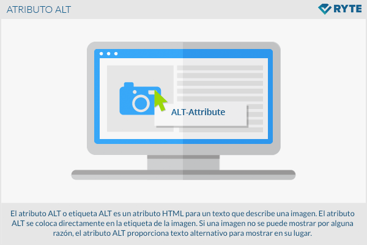
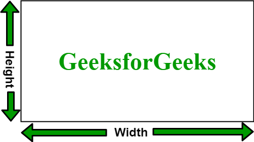
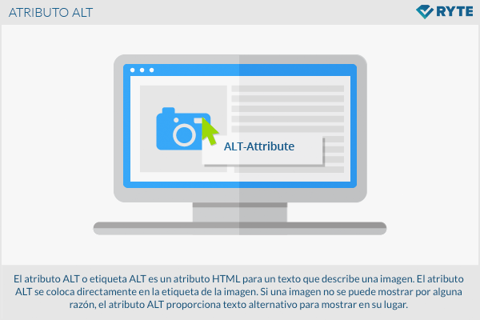
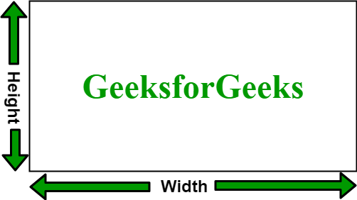

HTML Images Syntax
La etiqueta HTML <img> se utiliza para incrustar una imagen en una página web. Aunque técnicamente las imágenes no se insertan directamente en una página web, se enlazan a través de la etiqueta <img>, que crea un espacio reservado para la imagen referenciada. La etiqueta <img> está vacía, lo que significa que no tiene una etiqueta de cierre, y solo contiene atributos. Los dos atributos obligatorios son:- src: Especifica la ruta o URL de la imagen.
- alt: Proporciona un texto alternativo para la imagen, que se muestra si la imagen no puede cargarse o para usuarios con discapacidades visuales.
|
<img src="url" alt="alternatetext"> |
The src Attribute
El atributo "src" El atributo "src" necesario especifica la ruta (URL) de la imagen. Cuando una página web se carga, es el navegador en ese momento el que obtiene la imagen de un servidor web e la inserta en la página. Por lo tanto, asegúrate de que la imagen realmente permanezca en el mismo lugar con respecto a la página web, de lo contrario, tus visitantes verán un ícono de enlace roto. El ícono de enlace roto y el texto alternativo se mostrarán si el navegador no puede encontrar la imagen.Es crucial asegurarse de que la ruta especificada en el atributo "src" sea correcta y que la imagen esté disponible en ese lugar cuando la página se carga. Si la imagen no se encuentra, el navegador mostrará un ícono de enlace roto, y es por eso que es importante proporcionar también un texto alternativo significativo a través del atributo "alt". Este texto alternativo se mostrará si la imagen no puede cargarse por alguna razón, mejorando así la accesibilidad de tu página web para usuarios con discapacidades visuales o en situaciones donde la imagen no está disponible.
|
<img src="img_chania.jpg" alt="Flowers in Chania"> |
The alt Attribute
El atributo "alt" El atributo "alt" obligatorio proporciona un texto alternativo para una imagen, en caso de que el usuario, por alguna razón, no pueda verla (debido a una conexión lenta, un error en el atributo "src" o si el usuario utiliza un lector de pantalla). El valor del atributo "alt" debería describir la imagen:|
<img src="img_chania.jpg" alt="Flores en Chania"> |
|
<img src="nombreincorrecto.gif" alt="Flores en Chania"> |
Image Size - Width and Height
Puedes utilizar el atributo "style" para especificar el ancho y la altura de una imagen. Este atributo se integra directamente en la etiqueta <img> y utiliza reglas de estilo en línea. Aquí tienes un ejemplo:|
<img src="img_girl.jpg" alt="Chica con una chaqueta" style="width:500px;height:600px;"> |
|
<img src="img_girl.jpg" alt="Chica con una chaqueta" width="500" height="600"> |
Width and Height, or Style?
Los atributos de "width", "height" y "style" son todos válidos en HTML. Sin embargo, sugerimos el uso del atributo "style". Esto evita que las hojas de estilo cambien el tamaño de las imágenes.- Ancho y Altura: Puedes especificar el tamaño de una imagen usando los atributos "width" y "height" dentro de la etiqueta <img>. Estos atributos aceptan valores en píxeles para determinar las dimensiones de la imagen. Por ejemplo:
|
<!DOCTYPE html> |
Images in Another Folder
Si tus imágenes se encuentran en una subcarpeta, es necesario incluir el nombre de la carpeta en el atributo "src". Por ejemplo:|
<img src="/images/html5.gif" alt="Ícono de HTML5" style="width:128px;height:128px;"> |
|
<img src="https://www.w3schools.com/images/w3schools_green.jpg" alt="W3Schools.com"> |
- Las imágenes externas pueden estar protegidas por derechos de autor. Si no obtienes permiso para usarlas, podrías infringir las leyes de copyright.
- Además, no tienes control sobre las imágenes externas; pueden ser eliminadas o modificadas en cualquier momento sin previo aviso.
Animated Images
- GIF Animadas: El formato de archivo GIF (Graphics Interchange Format) es capaz de almacenar múltiples imágenes en un solo archivo, lo que permite la creación de imágenes animadas. Cada imagen en el GIF se muestra en secuencia, creando así una animación.
- Atributo "alt":El atributo "alt" proporciona un texto alternativo que se muestra si la imagen no puede cargarse. Es una buena práctica agregar una descripción significativa, especialmente en el caso de imágenes animadas donde la velocidad de carga puede ser un factor.
- Estilo para Tamaño:En este ejemplo, se utiliza el atributo "style" para establecer el ancho y la altura de la imagen animada en 48 píxeles cada uno. Esto ayuda a controlar el tamaño de la imagen en la página y asegurar una presentación visual coherente.
- Consideraciones de Accesibilidad: Accesibilidad: Al usar imágenes animadas, es esencial considerar la accesibilidad. Proporcionar un texto alternativo descriptivo mediante el atributo "alt" beneficia a usuarios con discapacidades visuales o a aquellos que optan por desactivar las animaciones en sus navegadores.
 


